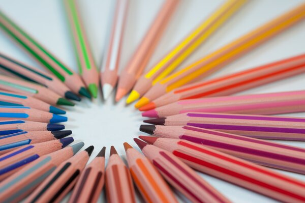
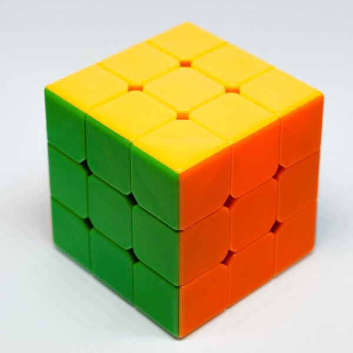

Who am I?
Hey y'all. How's it Going? My name is Andrew Stamm, and I am a computer science major at BYU-I.
My experience With Art
In all complete honesty, I would consider myself to be a beginner at art. I do have a little experience in this field though. In high school, I took an art class where I was exposed to several different forms of art. I always enjoyed working on art projects in school. Anytime I have the opportunity to create something artistic in school or with friends or just fun even, I enjoyed it. This is a major reason why I like art.
Why Art?
My favorite part about art is creating. I enjoy taking my ideas and creating something fun and exciting out of them. More specifically, I enjoy creating art with a variety of unique mediums, such as legos, sand, or even pencils or game board pieces. I enjoy creating art with everyday things that people would not normally consider as mediums for art, and I want to challenge others to enjoy creating as well.
What is My Favorite Medium?
Believe it or not, my favorite art medium to work with is Rubik’s Cubes. Typically, when people think about Rubik’s Cubes, I am willing to guess that making art with them would be the last thing that people would think about. I’ve been creating fun and unique designs with Rubik’s Cubes from the time I was nine years old. Since then, I’ve come up with many different designs and patterns for Rubik’s Cubes and other similar twisting puzzles.
